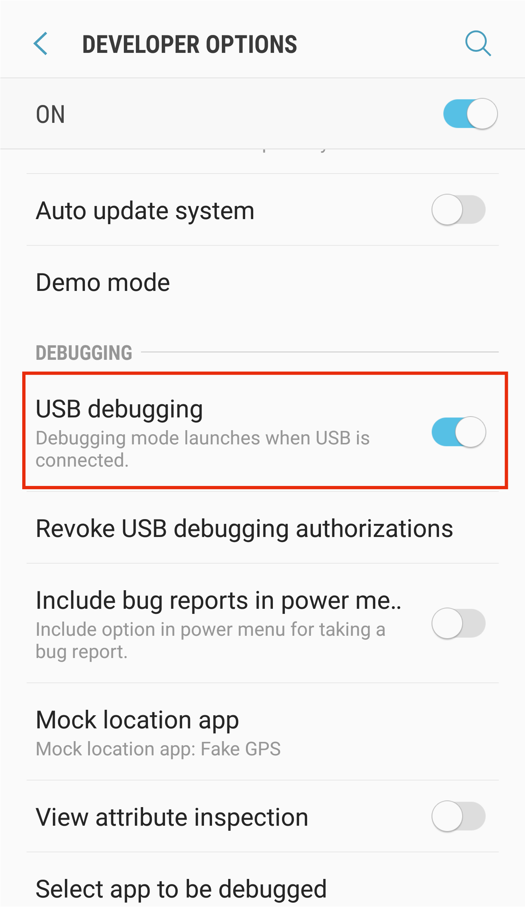
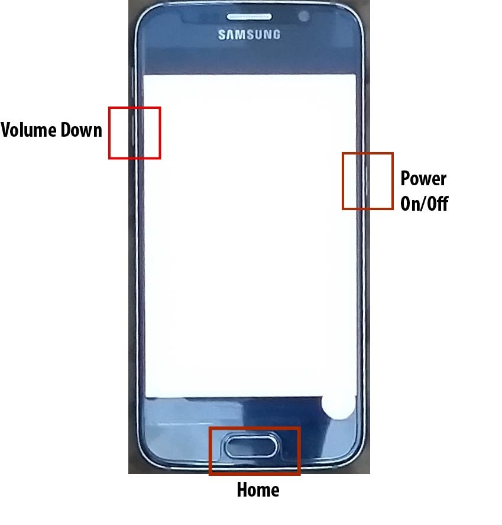
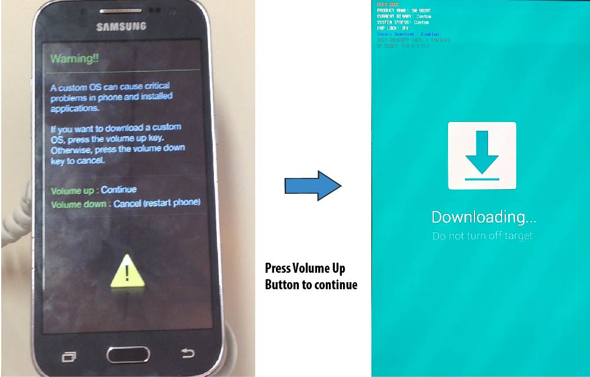
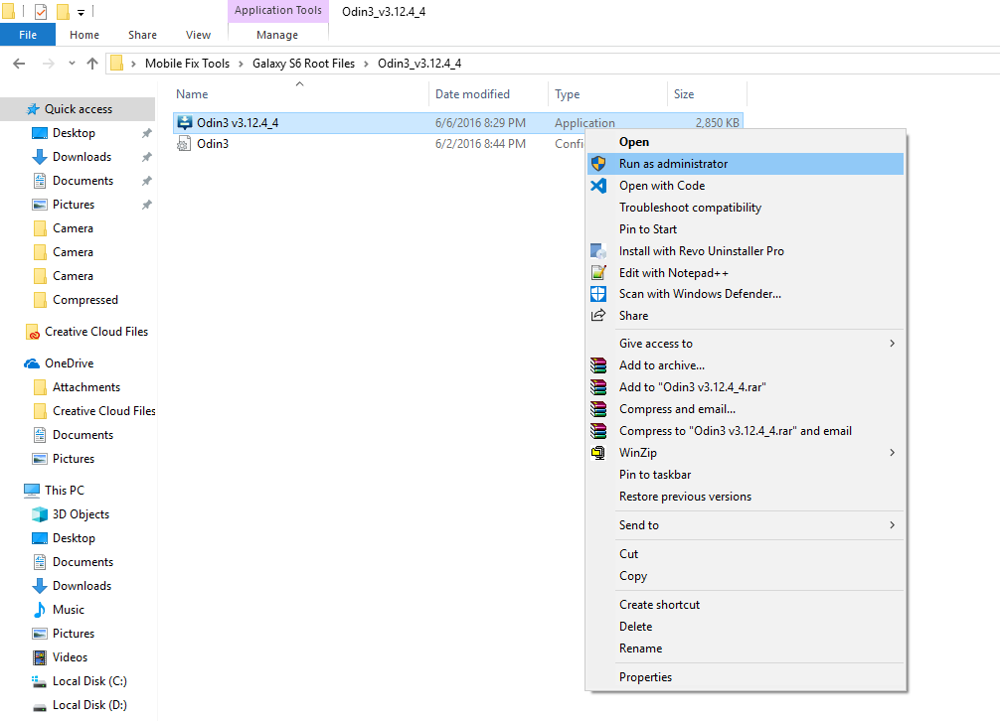
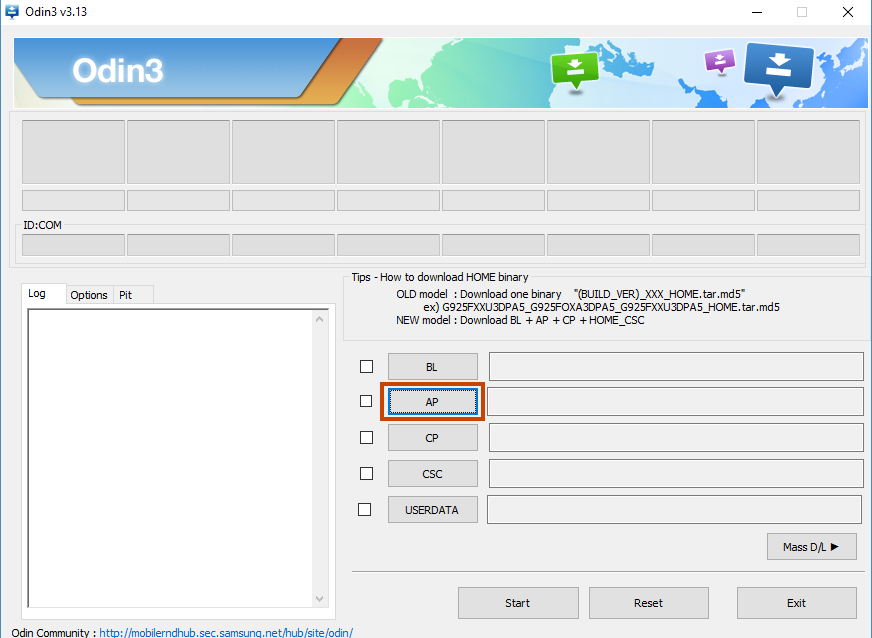
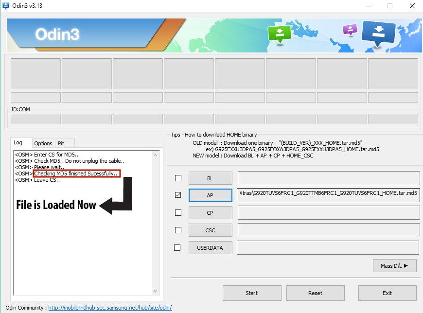
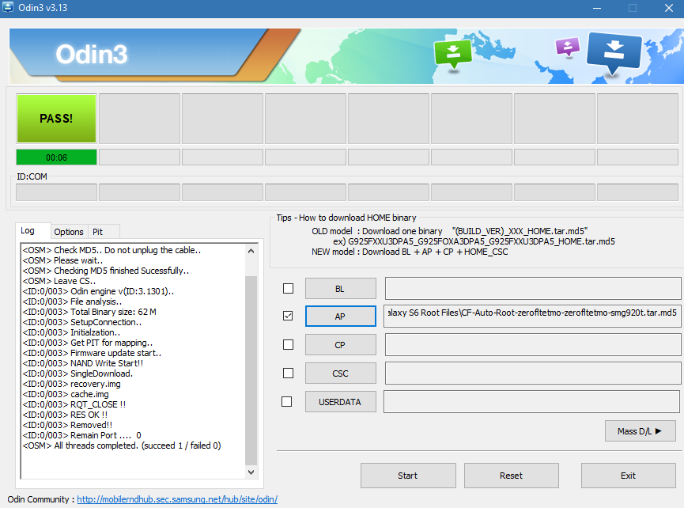

How to Use CF Auto Root

Rooting
Rooting Android is the same as Jailbreaking on iPhone. When you root Android, you gain access to all of the android operations. Rooting has many privileges like replacing the firmware by installing custom ROMs , installing custom recoveries, updating the OS, uninstalling system apps, installing unapproved apps, and installing Xposed Modules to improve the looks of your phone. After rooting your Android Device, you will be able to access the files that are normally not accessible.
CF Auto Root
CF Auto Root package was made by developer Chainfire so that the most common phones and tablets can be rooted using the same exploit. CF Auto Root is the root for beginners and for the people who want to keep it close to the stock ROM as it is compatible with the stock ROM. If you are a beginner then you should choose this method because it is the quickest and easiest way for your first root. CF Auto Root installs SuperSU on your android device so that you can gain root access easily. You can use CF Auto Root for rooting Samsung if you have a Samsung Device. If you have any device other than Samsung Galaxy still you can root your Android Phone through CF Auto Root as CF Auto Root is compatible with many Android devices. Read more to understand how to use CF Auto Root.
Note: Rooting an Android Device may void the warranty on the device or it may completely brick the device if not done properly. Root at your own risk, we do not take responsibility for your device. Only root if you know what you are doing. Study this topic thoroughly before rooting your Android Device.
Requirements to Use CF Auto Root
- Install your mobile drivers in your PC/Laptop (If your mobile doesn't connect with your PC/Laptop).
- Download Odin.
- Download the CF Auto Root file for your device, according to Device Model Number and Android Version.
- Make Complete Backup of your Android Data. If you don't know how to make a complete backup of your android data then you can see this guide on how to backup your android phone.
How use CF Auto Root
Here's how to use CF Auto Root:
1. Enable USB Debugging
Go to Settings > Developer Options and enable USB Debugging. If Developer Options isn't visible then go to Settings > About and tap the Build number seven times. This will enable Developer Options from where you can enable USB Debugging.

2. Reboot into Download Mode
Reboot your phone into Download Mode by pressing Home, Power, and Volume down key at the same time and hold them.

Press and hold the keys until a warning screen appears and then press the volume up button to continue.

3. Connect to Computer to use CF Auto Root
Connect your phone to your Computer/Laptop to root your Android Phone through CF Auto Root.
4. Open Odin and Root Android Phone through CF Auto Root
Open Odin as Admin by right-clicking it.

Click on AP/PDA and select the CF Auto Root file. (Unzip the downloaded file and select .md5 file).

Wait for approximately 2 mins until it gets loaded. Keep an eye on the log (at the left side) so that you will come to know when it's loaded.

Click on the Start button and wait until all the process gets done and then PASS comes written on the screen.

Now, your mobile will automatically restart
5. Install Root Checker to verify root
Go to play store and install Root Checker. Once you have installed Root checker from google play, open it and tap on Verify Root. Now, click on Grant when asked to give Superuser access to the app. If you have done the root properly then you will see a message saying Congratulations! Root Access is properly installed on this device!.